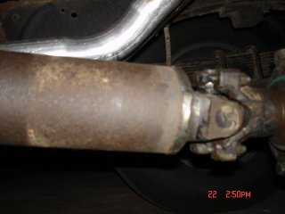

Installation of a 300 Ford six into my 1959 F100 continued...
Page 2
 Since the tranny mounts are readily available, I purchased one from a supplier. If I ever do another one, I will probably just make my own. The tranny mount has about a 2" drop, and I ended up raising my transmission back up about 1 1/2". (I used a piece of square tubing for this as shown in the picture). I would think a piece of 5/16" or 3/8" X 3" flat iron would work nicely for the transmission crossmember (it's almost straight across the lower frame rails).
Since the tranny mounts are readily available, I purchased one from a supplier. If I ever do another one, I will probably just make my own. The tranny mount has about a 2" drop, and I ended up raising my transmission back up about 1 1/2". (I used a piece of square tubing for this as shown in the picture). I would think a piece of 5/16" or 3/8" X 3" flat iron would work nicely for the transmission crossmember (it's almost straight across the lower frame rails).
I might note here, I also used the speedometer cable from the donor truck. I was able to pull the "speedometer head" end from the donor cable housing, then I removed the "speedometer head" end from my original cable (slight amount of heat from a butane torch will help here). After the end was removed, (with it on end) I heated it slightly and drove a rod (or bolt) in it to expand the original crimp. I then simply put it on the cable housing from the donor and re-crimped it...... worked like a charm.

For my driveshaft, again I used the one from the donor truck.... it naturally fit the c-4 tranny, and it was the same diameter as my '59 driveshaft. With a hacksaw, I sawed in about 1/16" all the way around edge of the rear weld on my original shaft to remove the yoke I needed for the new shaft, measured the length I need the new one to be, cut the donor shaft, inserted the yoke (the yokes have a shoulder that slips inside the driveshaft about 1/4"-1/2" inch) and welded it in place.